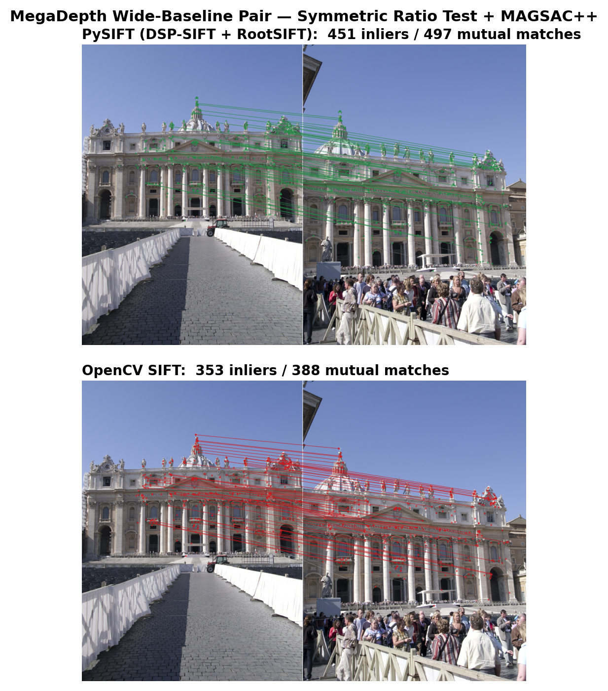

A pure-Python, open-source GPU-resident implementation of SIFT built on CuPy and Numba CUDA kernels — faster and yet more accurate. Zero-copy DLPack interop to PyTorch frees your downstream DL steps from CPU PCIe bottlenecks.
PySIFT is a pure-Python, open-source GPU-resident implementation of the Scale-Invariant Feature Transform (SIFT) built on CuPy and Numba CUDA kernels which is faster and yet more accurate. It runs the entire detection-to-descriptor pipeline on your NVIDIA GPU with zero-copy DLPack interop to PyTorch so that your downstream DL steps will be free from CPU PCIe bottlenecks.
Unlike OpenCV's SIFT (compiled C++ running on CPU), PySIFT keeps tensors in VRAM from the moment you load the image until your downstream pipeline (matching, RANSAC, bundle adjustment, rendering) consumes it. For pipelines in medical imaging, drone stitching, SLAM, robotics, and 3D reconstruction, this eliminates the bottleneck that makes CPU-based SIFT a liability.
All 5 pipeline stages run on GPU. Descriptors stay in VRAM — no CPU round-trips. Zero-copy handoff to PyTorch, CuPy, or any DLPack consumer.
Bitwise-identical output across runs. No non-deterministic CUDA ops. Warp-shuffle reductions replace atomicAdd for reproducibility.
Returns cv2.KeyPoint objects and NumPy descriptors by default.
Swap cv2.SIFT_create() for PySIFT() — everything else stays the same.
Tested against OpenCV SIFT on 4 standard benchmarks (RTX 3050 Laptop GPU, 4 GB VRAM):
| Benchmark | Metric | PySIFT | OpenCV | Delta |
|---|---|---|---|---|
| HPatches | MMA@10 | 0.703 | 0.681 | +2.2pp |
| IMC Phototourism | Inliers/pair | 303 | 205 | +47% |
| MegaDepth-1500 | AUC@10 | 0.503 | 0.447 | +5.6pp |
| ROxford5K | mAP (Medium) | 0.455 | 0.380 | +7.5pp |
| Stage | PySIFT (GPU) | OpenCV (CPU) | Speedup |
|---|---|---|---|
| Detection + Description | 88 ms | 111 ms | 1.26x |
| BF Matching (1000 kp) | 2.1 ms | 8.4 ms | 4.0x |
| End-to-End (2 images) | 178 ms | 241 ms | 1.35x |
# 1. Install CUDA dependencies (order matters)
pip install cupy-cuda12x
pip install torch --index-url https://download.pytorch.org/whl/cu124
# 2. Install PySIFT
pip install staysiftPySIFT implements Lowe's SIFT algorithm (IJCV 2004) entirely on the GPU. Every stage — from image preprocessing to descriptor output — executes as CUDA kernels via CuPy and Numba. The image never leaves VRAM.
Adaptive histogram equalization (CLAHE) normalizes local contrast before building the scale-space pyramid. This yields 40-80% more usable keypoints on night, haze, and low-contrast images vs. raw input — critical for drone imagery at dawn/dusk and medical scans with uneven illumination.
The image is progressively blurred and downsampled across octaves. PySIFT
supports fp16_pyramid=True for half-precision storage (2x memory savings
on VRAM-constrained GPUs like Jetson or RTX 3050), with full fp32 precision during
DoG subtraction to avoid catastrophic cancellation.
Difference-of-Gaussians (DoG) volumes are computed by subtracting adjacent Gaussian levels. Local extrema in 3D (x, y, scale) are candidate keypoints. Sub-pixel refinement via Taylor expansion and edge-response rejection (Hessian ratio test) filter the candidates.
A gradient orientation histogram (36 bins) around each keypoint determines
its dominant orientation, making descriptors rotation-invariant.
PySIFT also supports learned orientation via OriNet
(orientation='orinet').
A 128-dimensional histogram of oriented gradients over a 16x16 patch
(4x4 spatial bins, 8 orientation bins). PySIFT applies RootSIFT normalization
by default (L1 + sqrt), which improves matching over raw L2-normalized SIFT.
With dsp=True, multi-scale descriptor pooling further boosts robustness.
gpu_output=True to keep keypoints
and descriptors as CuPy arrays in VRAM. Pass directly to GPU-based matchers
without any PCIe transfer.
In a typical vision pipeline (detect → match → estimate → reconstruct), CPU-based SIFT forces a GPU→CPU→GPU round-trip at every stage boundary. PySIFT eliminates this overhead entirely:
| Pipeline | PCIe Transfers | GPU Idle Time |
|---|---|---|
| OpenCV SIFT + PyTorch | 4 per image pair | ~40% of pipeline |
| PySIFT + CuPy matching | 0 (until final output) | <5% |
PySIFT detects scale-invariant keypoints across a Gaussian pyramid. The default configuration (4 octaves, 3 scales per octave, contrast threshold 0.04) closely matches OpenCV SIFT's behavior while running entirely on the GPU.

Image not availablefrom pysift import PySIFT
import cv2
sift = PySIFT()
gray = cv2.imread("image.jpg", cv2.IMREAD_GRAYSCALE)
# Returns OpenCV-compatible KeyPoints + NumPy descriptors
keypoints, descriptors = sift.detectAndCompute(gray, None)
print(f"Detected {len(keypoints)} keypoints")
print(f"Descriptor shape: {descriptors.shape}") # (N, 128)# Keep everything on GPU as CuPy arrays
kp_gpu, desc_gpu = sift.detectAndCompute(gray, None, gpu_output=True)
# kp_gpu: CuPy (N, 4) -- [x, y, size, angle]
# desc_gpu: CuPy (N, 128) -- ready for GPU matching| Parameter | Default | Effect |
|---|---|---|
n_octaves | 4 | More octaves = more scale coverage, more keypoints |
n_scales | 3 | Scale levels per octave (S in Lowe 2004) |
contrast_thresh | 0.04 | Lower = more keypoints on low-contrast regions |
edge_thresh | 10.0 | Higher = keep more edge-like keypoints |
double_image | True | 2x upsample (octave -1), matches OpenCV default |
rootsift | True | L1+sqrt normalization (improves matching) |
contrast_thresh based on image statistics (night scenes get lower thresholds).
You can override this by setting the parameter explicitly.
PySIFT descriptors are L2-compatible (or RootSIFT by default), so any standard matcher works. For best results, combine Lowe's ratio test with mutual nearest-neighbor (MNN) filtering.
bf = cv2.BFMatcher(cv2.NORM_L2)
raw = bf.knnMatch(desc_a, desc_b, k=2)
# Lowe's ratio test
good = [m for m, n in raw if m.distance < 0.85 * n.distance]
When using gpu_output=True, descriptors are CuPy arrays in VRAM.
Match entirely on GPU using matmul-based brute-force:
import cupy as cp
def gpu_bf_match_mutual(desc_a, desc_b, ratio=0.85):
"""Mutual nearest-neighbor matching on GPU."""
ratio_sq = ratio * ratio
# L2 distance matrix via matmul
a_sq = cp.sum(desc_a * desc_a, axis=1, keepdims=True)
b_sq = cp.sum(desc_b * desc_b, axis=1, keepdims=True).T
dist_sq = a_sq + b_sq - 2.0 * cp.matmul(desc_a, desc_b.T)
cp.maximum(dist_sq, 0.0, out=dist_sq)
# Forward: Lowe's ratio test (A -> B)
top2 = cp.argpartition(dist_sq, 1, axis=1)[:, :2]
rows = cp.arange(dist_sq.shape[0])
d0 = dist_sq[rows, top2[:, 0]]
d1 = dist_sq[rows, top2[:, 1]]
swap = d0 > d1
best_f = cp.where(swap, top2[:, 1], top2[:, 0])
d_best = cp.where(swap, d1, d0)
d_second = cp.where(swap, d0, d1)
pass_ratio = (d_best < ratio_sq * d_second) & (d_second > 0)
# Backward: nearest neighbor (B -> A)
best_b = cp.argmin(dist_sq, axis=0)
# Mutual check
mutual = pass_ratio & (best_b[best_f] == rows)
q = cp.asnumpy(cp.where(mutual)[0])
t = cp.asnumpy(best_f[mutual])
return q, tA→B only. A keypoint in image A finds its best match in B, but that match in B might prefer a different keypoint in A. This produces ~30-40% false matches that poison RANSAC.
Requires A→B and B→A to agree. Only keeps matches where both images pick each other as closest. Eliminates most outliers while preserving true matches.
# MAGSAC++ with aggressive settings
F, mask = cv2.findFundamentalMat(
pts_a, pts_b,
cv2.USAC_MAGSAC,
ransacReprojThreshold=2.0,
confidence=0.9999,
maxIters=10000
)DSP-SIFT (Dong & Soatto, CVPR 2015) computes descriptors at multiple Gaussian scale radii around each keypoint and averages the histograms. This makes each descriptor an implicit mixture over scales, dramatically improving robustness to scale estimation errors and viewpoint changes — especially important for wide-baseline stereo in 3D reconstruction and drone aerial imagery with varying altitude.
The output is still a 128-dimensional descriptor — same size, better quality. No change to matching code required.
# One flag enables DSP pooling
sift = PySIFT(dsp=True)
# Everything else stays the same
kp, desc = sift.detectAndCompute(gray, None)
# desc.shape = (N, 128) -- same dimensionality| Benchmark | Standard SIFT | DSP-SIFT | Delta |
|---|---|---|---|
| IMC Phototourism (inliers) | 245 | 303 | +24% |
| MegaDepth AUC@10 | 0.457 | 0.503 | +4.6pp |
| HPatches MMA@10 | 0.695 | 0.703 | +0.8pp |
PySIFT fuses all DSP scales into a single CUDA kernel launch per octave. Each thread block processes one keypoint, looping over the 3 scale multipliers and accumulating into shared memory. This avoids the naive approach of launching 3 separate descriptor kernels (3x overhead).
Every vision pipeline that matches images — from surgical navigation to autonomous flight — starts with feature extraction. PySIFT replaces the CPU bottleneck at the foundation of these pipelines with a GPU-resident alternative that requires no retraining, no C++ compilation, and no domain-specific tuning.
Register histopathology whole-slide images, align retinal fundus scans, fuse multi-modal MRI/CT volumes. SIFT's physics-based scale-space is domain-agnostic — no retraining needed on medical data, unlike learned detectors (SuperPoint) trained on street-level photos.
# Register two histopathology slide regions
from pysift import PySIFT
sift = PySIFT(dsp=True)
kp1, d1 = sift.detectAndCompute(slide_a)
kp2, d2 = sift.detectAndCompute(slide_b)Real-time aerial mosaic construction on edge GPUs. PySIFT runs on 4 GB VRAM (Jetson Orin compatible), handles altitude-varying scale changes via DSP-SIFT pooling, and produces deterministic output for certifiable flight systems.
# Stitch two aerial frames on Jetson
from pysift import GPUPyStitch
stitcher = GPUPyStitch()
panorama = stitcher.stitch(frame_left, frame_right)GPU-resident features feed directly into visual odometry without PCIe stall. Zero-copy DLPack handoff means PySIFT descriptors are immediately available to PyTorch-based pose estimators, loop closure detectors, and map optimizers.
# GPU-resident features for VO pipeline
kp, desc = sift.detectAndCompute(
frame, None, gpu_output=True
)
# desc is CuPy array in VRAM -- zero-copy
torch_desc = torch.from_dlpack(desc)Pick-and-place object localization, bin picking, visual servoing. Deterministic output means identical features on identical input — repeatable grasps, auditable decisions, and regression-testable perception stacks.
Every NeRF and 3D Gaussian Splatting pipeline starts with COLMAP, which uses CPU SIFT. PySIFT is a drop-in replacement that eliminates the COLMAP preprocessing bottleneck. GPU-resident features flow directly into bundle adjustment without PCIe transfers.
# Replace COLMAP's CPU SIFT extraction
sift = PySIFT(dsp=True)
for img in scene_images:
kp, desc = sift.detectAndCompute(
img, None, gpu_output=True
)Gigapixel mosaics from satellite strips. PySIFT's speed advantage grows with resolution (3.2x faster at 4K, expected 4-5x at 8K). No retraining needed — SIFT's scale-space theory is inherently domain-agnostic, working on any spectral band.
| Property | PySIFT (Classical GPU SIFT) | SuperPoint / Learned |
|---|---|---|
| Domain transfer | Works on any imagery (medical, satellite, microscopy) | Trained on MS-COCO street photos — degrades out-of-domain |
| Determinism | Bitwise identical across runs | GPU float non-determinism |
| Scale invariance | True multi-scale via DoG pyramid | Single 8x grid, no scale-space |
| Model weights | 0 MB (physics-based) | 614 MB (SuperPoint) |
| Certifiability | Deterministic + inspectable = auditable | Black box |
| 4GB GPU support | Yes (tested on RTX 3050) | Tight on 4GB with large images |
Run PySIFT on a free T4 GPU. Our competition notebook processes 4,941 image pairs in ~30 minutes.
Requires NVIDIA GPU with CUDA 12.x. Tested on RTX 3050 (4GB), RTX 4090 (24GB), Tesla T4 (16GB).
pip install staysiftfrom pysift import PySIFT
import cv2
import numpy as np
# 1. Detect with DSP-SIFT
sift = PySIFT(dsp=True)
img_a = cv2.imread("scene_left.jpg", cv2.IMREAD_GRAYSCALE)
img_b = cv2.imread("scene_right.jpg", cv2.IMREAD_GRAYSCALE)
kp_a, desc_a = sift.detectAndCompute(img_a, None)
kp_b, desc_b = sift.detectAndCompute(img_b, None)
# 2. Match with ratio test
bf = cv2.BFMatcher(cv2.NORM_L2)
matches = bf.knnMatch(desc_a, desc_b, k=2)
good = [m for m, n in matches if m.distance < 0.85 * n.distance]
# 3. Estimate fundamental matrix
pts_a = np.float32([kp_a[m.queryIdx].pt for m in good])
pts_b = np.float32([kp_b[m.trainIdx].pt for m in good])
F, mask = cv2.findFundamentalMat(
pts_a, pts_b, cv2.USAC_MAGSAC, 2.0, 0.9999, 10000
)
inliers = mask.ravel().sum()
print(f"Matches: {len(good)}, Inliers: {inliers}")import cupy as cp
# Detect -- descriptors stay in VRAM
kp_a, desc_a = sift.detectAndCompute(img_a, None, gpu_output=True)
kp_b, desc_b = sift.detectAndCompute(img_b, None, gpu_output=True)
# Match -- GPU matmul, zero PCIe transfer
q, t = gpu_bf_match_mutual(desc_a, desc_b, ratio=0.85)
# Only small coordinate arrays transfer to CPU for RANSAC
pts_a = cp.asnumpy(kp_a[q, :2])
pts_b = cp.asnumpy(kp_b[t, :2])| Resource | Link |
|---|---|
| arXiv Paper | arxiv.org/abs/2605.17869 |
| GitHub Repository | github.com/SivaIITM/PySIFT |
| PyPI Package | pypi.org/project/staysift |
| Documentation | pysift-gpu.readthedocs.io |
| Kaggle Competition | IMC 2026 Warm-Up Sprint |
| HuggingFace Space | PySIFT Interactive Demo |
pip install staysift on a CPU-only machine will install but
fail at runtime.